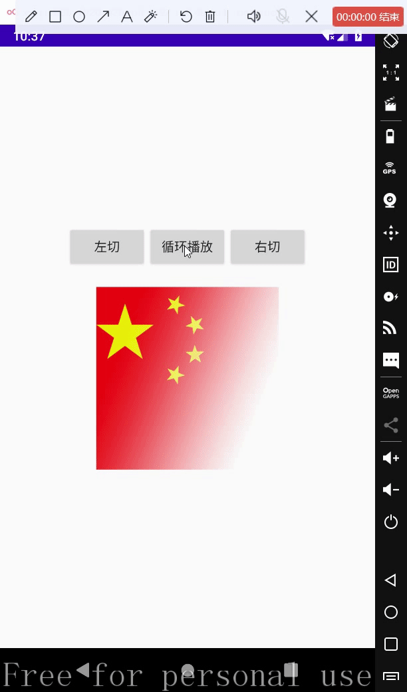
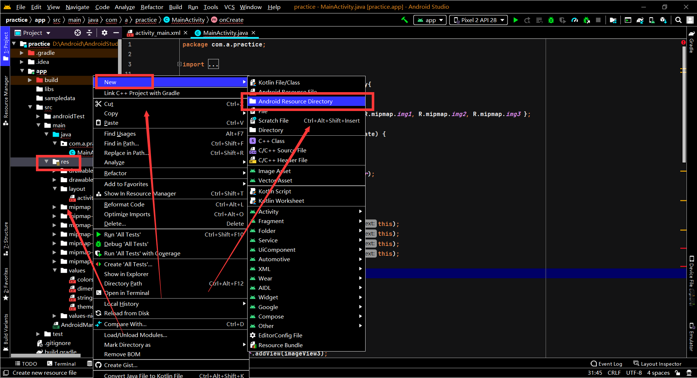
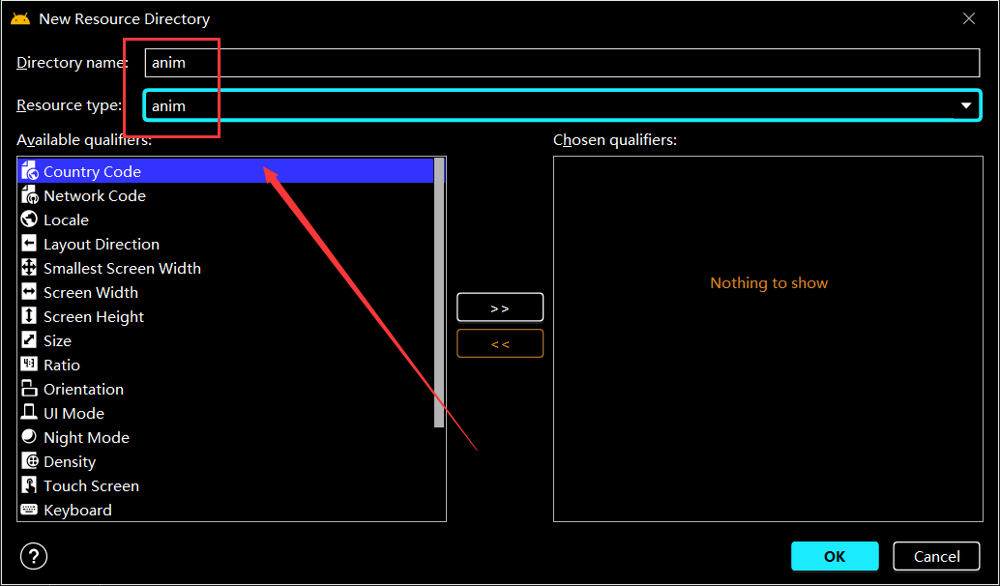
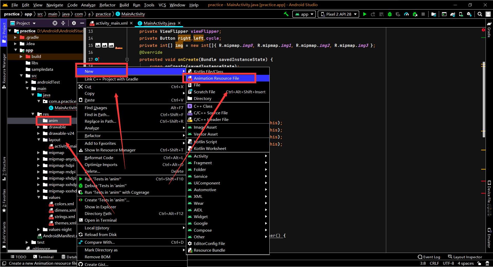
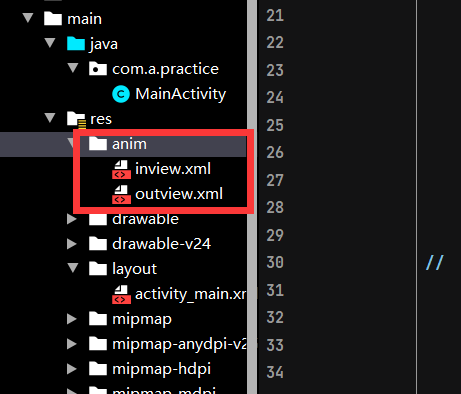

常用属性
- android:src: 设置图片资源
- android:scaleType: 设置图片缩放类型
- android:maxHeight: 最大高度
- android:maxWidth: 最大宽度
- android:adjustViewBounds: 调整view界限
scaleType缩放类型
1
2
3
4
5
6
7
8
9
10
11
12
| //共同点：缩小图片
fitStart: 保持宽高比缩放图片，直到较长的边与image的边长相等，缩放后将图片放在ImageView的左上角
fitCenter: 默认值，保持宽高比缩放图片，直到较长的边与image的边长相等，缩放后放于中间
fitEnd: 保持宽高比缩放图片，直到较长的边与image的边长相等，缩放后放于右下角
fitXY: 对图像的纵横方向进行独立缩放使得图片完全适应ImageView，但是图片的宽高比可能会发生改变
//共同点：居中显示
center: 保持原图的宽高比和大小，图片中心点与ImageView中心点重叠，当原图宽高大于ImageView时，超出部分将被剪裁
centerCrop: 保持宽高比缩放图片，直到完全覆盖ImageView，可能会出现图片的显示不完全
centerInside: 保持宽高比缩放图片，直到ImageView能够完全地将图片显示出，如果图片宽高小于ImageView，将直接居中显示
matrix: 保持原图的宽高比和大小,从ImageView的左上角开始绘制原图，超出部分将被剪裁
|
ViewFlipper
其实ViewFlipper不该写在这里，因为它继承自ViewAnimator(提供不同View的动画切换效果)，而ViewAnimator又是FrameLayout的子类…
相关方法:
- isFlipping: 判断view切换是否正在进行
- setFlippInterval: 设置view之间切换的时间间隔
- startFlipping: 使用上面切换的时间间隔开始切换所有的View，切换会循环进行
- stopFlipping: 停止View切换
ViewAnimator
通常不直接使用ViewAnimator，而是使用它的两个子类和
相关方法:
- setInAnimator: 设置View进入屏幕时使用的动画
- setOutAnimator: 设置View退出屏幕时使用的动画
- showNext: 显示下一个视图
- showPrevious: 显示上一个视图
ViewFlipper画面切换
ViewFlipper画面切换需要给其添加ImageView，原理跟播放幻灯片差不多，下面动态给ViewFlipper添加图片控件
1
2
3
4
5
6
7
8
9
10
11
12
13
14
15
16
|
ImageView imageView1 = new ImageView(this);
ImageView imageView2 = new ImageView(this);
ImageView imageView3 = new ImageView(this);
ImageView imageView4 = new ImageView(this);
imageView1.setImageResource(img[0]);
imageView2.setImageResource(img[1]);
imageView3.setImageResource(img[2]);
imageView4.setImageResource(img[3]);
home2_viewFlipper1.addView(imageView1);
home2_viewFlipper1.addView(imageView2);
home2_viewFlipper1.addView(imageView3);
home2_viewFlipper1.addView(imageView4);
|
切换下一张图片显示
1
2
3
| home2_viewFlipper1.showNext();
|
ViewFlipper循环切换
1
2
3
4
5
6
7
8
9
10
11
12
13
|
if (home2_viewFlipper1.isFlipping()){
home2_viewFlipper1.stopFlipping();
home2_btn2.setText("循环切换");
}
else{
home2_viewFlipper1.setFlipInterval(1500);
home2_viewFlipper1.startFlipping();
home2_btn2.setText("停止切换");
}
|
添加动画效果
进入动画，inview.xml
1
2
3
4
5
6
7
8
| <?xml version="1.0" encoding="utf-8"?>
<set xmlns:android="http://schemas.android.com/apk/res/android">
<translate
android:duration="500"
android:fromXDelta="-100%p"
android:toXDelta="0"/>
</set>
|
退出动画，outview.xml
1
2
3
4
5
6
7
8
| <?xml version="1.0" encoding="utf-8"?>
<set xmlns:android="http://schemas.android.com/apk/res/android">
<translate
android:duration="500"
android:fromXDelta="0"
android:toXDelta="100%p"/>
</set>
|
在代码中添加动画
1
2
3
4
5
6
7
8
9
10
11
12
13
14
15
16
17
18
19
20
21
22
23
|
Animation animation = AnimationUtils.loadAnimation(HomeActivity2.this,
R.anim.inview);
home2_viewFlipper1.setInAnimation(animation);
Animation animation1 = AnimationUtils.loadAnimation(HomeActivity2.this,
R.anim.outview);
home2_viewFlipper1.setOutAnimation(animation1);
if (home2_viewFlipper1.isFlipping()){
home2_viewFlipper1.stopFlipping();
home2_btn2.setText("循环切换");
}
else{
home2_viewFlipper1.setFlipInterval(1000);
home2_viewFlipper1.startFlipping();
home2_btn2.setText("停止切换");
}
|
效果图

扩展: 创建anim动画
1.创建anim文件夹


2.在anim文件夹中创建动画资源文件

